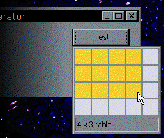

VB5 Office Table Picker Sample (21K)
VB5 Office Table Picker Sample (21K)
 VB5 vbAccelerator Toolbar with Office Table Picker Sample (38K)
VB5 vbAccelerator Toolbar with Office Table Picker Sample (38K)
 13 Aug 1999
13 Aug 1999
First Posted
 Detecting when another application is activated
Detecting when another application is activated
 vbAccelerator Toolbar and CoolMenu Control v3.5
vbAccelerator Toolbar and CoolMenu Control v3.5
 Subclassing Without The Crashes
Subclassing Without The Crashes
 vbAccelerator Drop-Down and Popup Form Control
vbAccelerator Drop-Down and Popup Form Control
 vbAccelerator ImageList Control and Class v2.0
vbAccelerator ImageList Control and Class v2.0

Creating drop-down tool windows
Use a PictureBox along with this class to emulate the Word 97 Toolbar's Table Picker
One feature I've been trying to achieve since I first discovered you could write API declares in VB3 (oops, showing my age here...) is a drop-down tool window you can show in response to a button or tool bar button click. These windows have been increasing in number in the Office series of tools and they are a really nice addition to a user interface.
This sample provides a neat class which allows you to convert any PictureBox or Control on a form into a drop-down tool window. As a demonstration of the technique, the class is used to implement a Word 97 table picker tool window.
How it Works
This drop-down window method uses the same technique as a Windows drop-down combo box does to display its drop-down portion. The drop-down portion is made to be a child of the Windows desktop. This allows the tool window portion to be drawn outside the boundaries of its owner form, as shown in the picture above.
Here is the code used to convert a standard control to a drop-down window and then show it. The comments in this code describe the steps you have to take to make the box work like a drop-down window:
Public Sub Show(ByVal x As Long, ByVal y As Long)
Dim tP As POINTAPI
Dim hWndDesktop As Long
Dim lStyle As Long
Dim lhWnd As Long
Dim lParenthWNd As Long
' Make sure the picture box won't appear in the
' task bar by making it into a Tool Window:
' See my article Set the Show In Taskbar property at run time for details.
lhWnd = DropDownObject.hwnd
lStyle = GetWindowLong(lhWnd, GWL_EXSTYLE)
lStyle = lStyle Or WS_EX_TOOLWINDOW
lStyle = lStyle And Not (WS_EX_APPWINDOW)
SetWindowLong lhWnd, GWL_EXSTYLE, lStyle
' Determine where to show it in Screen coordinates:
tP.x = x \ Screen.TwipsPerPixelX: tP.y = y \ Screen.TwipsPerPixelY
lParenthWNd = DropDownObject.Parent.hwnd
ClientToScreen lParenthWNd, tP
' Make the picture box a child of the desktop (so
' it can be fully shown even if it extends beyond
' the form boundaries):
SetParent lhWnd, hWndDesktop
' Show the object:
SetWindowPos lhWnd, lParenthWNd, tP.x, tP.y, _
DropDownObject.Width \ Screen.TwipsPerPixelX, DropDownObject.Height \ Screen.TwipsPerPixelY, _
SWP_SHOWWINDOW
' Tell VB it is shown:
DropDownObject.Visible = True
DropDownObject.ZOrder
' Try to set focus:
SetFocusAPI lhWnd
' Capture all mouse messages.
SetCapture lhWnd
' Start subclassing for Alt-tab
' See Subclassing without the crashes and
' Detecting when another application is activated for more details
m_hWndForm = lParenthWNd
m_hWndObject = lhWnd
AttachMessage Me, m_hWndForm, WM_ACTIVATE
' Store a flag saying we're shown:
m_bShown = True
End Sub
Using the cDropDownToolWindow Class
First, create an instance of the control or UserControl you want to turn into a drop down window, and then make it invisible.
Before using the window, call the Create method and pass in the control. Note your control must have a hWnd property to work as tool window.
When you want to show the window, call the Show method. Now all mouse events will be directed to your control. The standard method of handling a drop-down window is to initially keep the window open until at least the MouseDown event occurs. Then if the mouse is outside the window you cancel and hide it, or if it is inside you keep working until the MouseUp occurs, when it is also hidden and cancelled if the mouse was off the control.
You can use the InRect method to determine if the mouse is currently over the control and the Hide method to clear the form. A helper function Resize is also provided to allow you to modify the width and height of the tool window whilst it is shown.
Finally, when your application unloads, call the Destroy method to clear up the window.
Limitations to the Method
This version does not support using the keyboard in your tool window. This limitation can be worked around using a Windows Hook, (see the article in the Libraries section).